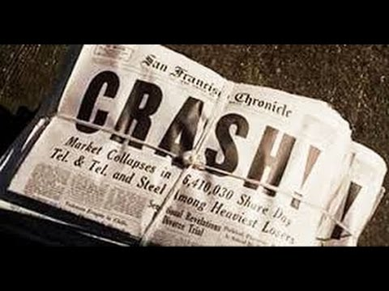

Responda as questões e verifique como está seu andamento nos estudos! Qualquer dúvida, chame o professor. Vamos lá :)
Uma revolução pode ser identificada como sendo:
O que é uma "Revolução"?
Sobre a Revolução Russa de 1917 pode-se afirmar que:
Dentre as causas da Revolução russa de 1917 podemos destacar:
Sobre a Revolução Russa é correto afirmar que: I. No início do século XX, a Rússia era governada por um czar (imperador) que concentrava todos os poderes e que mantinha uma administração centralizada e burocratizada. II. Muitos trabalhadores passaram a organizar manifestações, greves e passeatas, o que resultou no surgimento de partidos de oposição, dentre os quais destacou-se o Partido Operário Social-Democrata Russo (POSDR). III. O desenvolvimento industrial russo iniciou-se no final do século 19, principalmente com investimentos do governo russo, principalmente para a exploração de petróleo e produção de aço. IV. A revolução de 1905 foi marcada pela repressão das manifestações populares e pelo surgimento dos sovietes, que eram uma Assembleia Constituinte, organizada pelo czar. V. Com o início da Primeira Guerra Mundial (1914-1918), a Rússia entrou no conflito ao lado da Tríplice Entente (Inglaterra, França, Rússia) lutando contra os países que compunham a Tríplice Aliança.
Dentre as afirmações acima, estão corretas:
Em relação a Revolução Russa é correto afirmar que: